1) Introdução
Referência: FLUSP - QEMU and libvirt setup for Linux kernel development
O objetivo deste relato é documentar minha experiência seguindo o tutorial de configuração do ambiente de
teste para o desenvolvimento do kernel Linux utilizando QEMU e libvirt.
O kernel Linux é o núcleo do sistema operacional, uma camada que fica entre o hardware e os programas que utilizamos. Durante o desenvolvimento do kernel, é fundamental contar com um ambiente isolado para testar nossas alterações. Utilizar diretamente o kernel do sistema operacional seria muito arriscado, pois um erro pode travar ou corromper toda a máquina. Containers também não são uma opção adequada nesse caso, pois compartilham o kernel do sistema host, o que inviabiliza testar um kernel personalizado com segurança.
Desse modo, a melhor alternativa é usar uma máquina virtual. Utilizaremos o QEMU como
emulador (hypervisor) para subir as VMs
e o libvirt como camada de gerenciamento, facilitando operações como iniciar, parar e
inspecionar as máquinas virtuais via linha de comando.
O primeiro passo foi instalar as dependências necessárias:
sudo apt upgrade
sudo apt install qemu-system libvirt-daemon-system virtinst libguestfs-tools wget2) Preparando Diretório e Script de Teste
Seguindo o passo 1 do tutorial, criei o diretório /home/lk_dev, ajustei as permissões para o
usuário e grupo libvirt-qemu e adicionei meu usuário ao grupo. Esse passo não apresentou
nenhum problema.
sudo mkdir /home/lk_dev
sudo chown libvirt-qemu:libvirt-qemu /home/lk_dev
sudo adduser $USER libvirtApós reiniciar a máquina para aplicar as alterações de grupo, criei o script de ambiente e o tornei executável:
touch /home/lk_dev/activate.sh
chmod +x /home/lk_dev/activate.sh
Utilizando o nano, copiei o script disponível no tutorial para o arquivo
activate.sh. Esse script centraliza as variáveis de ambiente utilizadas nos próximos passos,
facilitando o fluxo de trabalho:
#!/usr/bin/env bash
# environment variables
export LK_DEV_DIR='/home/lk_dev' # path to testing environment directory
# prompt preamble
prompt_preamble='(LK-DEV)'
# colors
GREEN="\e[32m"
PINK="\e[35m"
BOLD="\e[1m"
RESET="\e[0m"
# launch Bash shell session w/ env vars defined
echo -e "${GREEN}Entering shell session for Linux Kernel Dev${RESET}"
echo -e "${GREEN}To exit, type 'exit' or press Ctrl+D.${RESET}"
exec bash --rcfile <(echo "source ~/.bashrc; PS1=\"\[${BOLD}\]\[${PINK}\]${prompt_preamble}\[${RESET}\] \$PS1\"")Ao executá-lo, o ambiente ficou configurado corretamente:
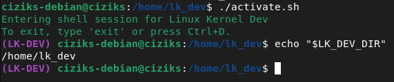
activate.sh com as variáveis de ambiente carregadas3) Configurar e Rodar VM
Baixando a Imagem do Debian
Após criar o diretório /home/lk_dev/vm para os arquivos da VM e adicionar seu caminho no
activate.sh (lembrando de recarregar o script), tentei baixar a imagem do Debian 12 sugerida no tutorial,
mas ela não estava mais disponível. Assim, baixei a versão diária mais recente, prestando atenção em dois
detalhes importantes: o formato deve ser .qcow2 (específico para o QEMU) e a arquitetura deve
ser arm64.
wget --directory-prefix="${VM_DIR}" \
http://cdimage.debian.org/cdimage/cloud/bookworm/daily/20260227-2401/debian-12-nocloud-arm64-daily-20260227-2401.qcow2
mv "${VM_DIR}/debian-12-nocloud-arm64-daily-20260227-2401.qcow2" \
"${VM_DIR}/base_arm64_img.qcow2"Identificando a Partição rootfs
Antes de expandir a imagem, é necessário identificar qual partição corresponde ao sistema de arquivos raiz
(rootfs ou /), associada ao formato ext4:
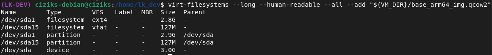
/dev/sdaExpandindo a Imagem
Com a partição /dev/sda identificada como rootfs, criei uma nova imagem a partir da base e
expandi a partição para 5GB. A imagem original tinha apenas 3GB, o que não é suficiente para compilar
o kernel com módulos adicionais.
Vale notar que, após o virt-resize, o label da partição rootfs pode mudar em relação à imagem
original. Ao rodar novamente o virt-filesystems na nova imagem, descobri que o novo rootfs
(/) passou a ser /dev/sda2.
Copiando Arquivos de Boot
Para identificar os arquivos de kernel e initrd necessários para subir a VM, rodei:
virt-ls --add "${VM_DIR}/arm64_img.qcow2" --mount /dev/sda2 /boot
O comando retornou os nomes dos arquivos: vmlinuz-6.1.0-43-arm64 e
initrd.img-6.1.0-43-arm64. Antes de criar o diretório de boot, adicionei a variável
BOOT_DIR ao activate.sh:
export BOOT_DIR="${LK_DEV_DIR}/arm64_boot"Em seguida, recarreguei o script, criei o diretório e copiei ambos os arquivos para lá:
mkdir "${BOOT_DIR}"
virt-copy-out -a "${VM_DIR}/arm64_img.qcow2" \
/boot/vmlinuz-6.1.0-43-arm64 \
/boot/initrd.img-6.1.0-43-arm64 \
"${BOOT_DIR}"Rodando a VM com QEMU
Com os arquivos de boot prontos, adicionei a função launch_vm_qemu() ao
activate.sh, atentando aos parâmetros de kernel, initrd e partição raiz:
# Launches a VM with a custom kernel and initrd
function launch_vm_qemu() {
qemu-system-aarch64 \
-M virt,gic-version=3 \
-m 2G -cpu cortex-a57 \
-smp 2 \
-netdev user,id=net0 -device virtio-net-device,netdev=net0 \
-initrd "${BOOT_DIR}/initrd.img-6.1.0-43-arm64" \
-kernel "${BOOT_DIR}/vmlinuz-6.1.0-43-arm64" \
-append "loglevel=8 root=/dev/vda2 rootwait" \
-device virtio-blk-pci,drive=hd \
-drive if=none,file="${VM_DIR}/arm64_img.qcow2",format=qcow2,id=hd \
-nographic
}
export -f launch_vm_qemu
Após recarregar o activate.sh e executar a função, a VM inicializou corretamente. O login foi
feito com o usuário root sem senha. Para desligar, basta rodar poweroff dentro
da VM.
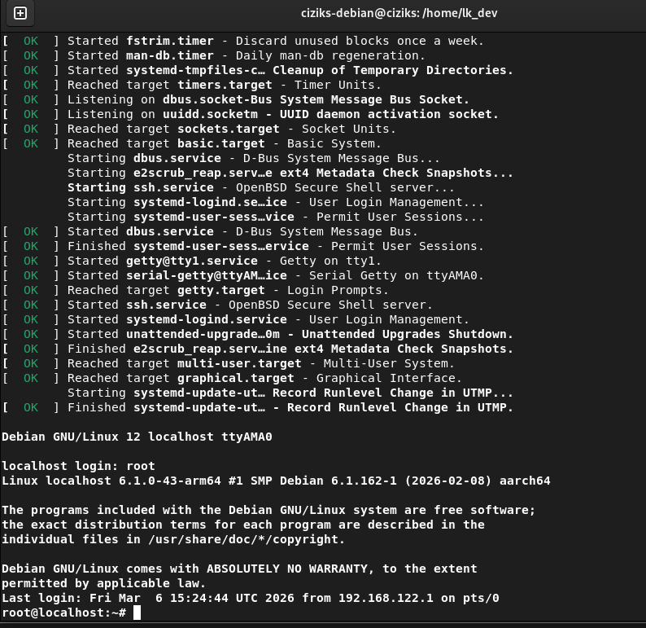
launch_vm_qemu()Gerenciando a VM com libvirt
O libvirt facilita o gerenciamento das VMs e estabelece uma rede virtual para comunicação com o host. Para ativá-lo:
# Iniciar o daemon do libvirt
sudo systemctl start libvirtd
# Iniciar a rede virtual interna
sudo virsh net-start default
Em seguida, adicionei a função create_vm_virsh() ao activate.sh. Um detalhe
importante: as funções precisam ser exportadas com export -f, caso contrário não ficam
disponíveis mesmo dentro do próprio script. (Menciono isso pois acabei esquecendo e tive que analisar por um tempo até encontrar o problema)
function create_vm_virsh() {
sudo virt-install \
--name "arm64" \
--memory 2048 \
--arch aarch64 --machine virt \
--osinfo detect=on,require=off \
--import \
--features acpi=off \
--disk path="${VM_DIR}/arm64_img.qcow2" \
--boot kernel=${BOOT_DIR}/vmlinuz-6.1.0-43-arm64,initrd=${BOOT_DIR}/initrd.img-6.1.0-43-arm64,kernel_args="loglevel=8 root=/dev/vda2 rootwait" \
--network bridge:virbr0 \
--graphics none
}
export -f create_vm_virsh
Após salvar e recarregar o script, o resultado do boot foi idêntico ao do launch_vm_qemu. A
função create_vm_virsh só precisa ser executada uma vez para registrar a VM no libvirt. Nas
interações seguintes, basta rodar:
# Iniciar e conectar ao console da VM
sudo virsh start --console arm64
# Desligar a VM
sudo virsh shutdown arm644) Configuração de Acesso SSH (Host → VM)
Iniciando a VM
Com as dependências instaladas e a VM criada conforme o tutorial, iniciei a máquina virtual:
sudo virsh start --console arm64Troubleshooting - Instalando o Servidor SSH
Seguindo o tutorial, notei que o diretório /etc/ssh não existia na VM. Para resolver, instalei o
servidor
OpenSSH diretamente:
sudo apt update
sudo apt install openssh-server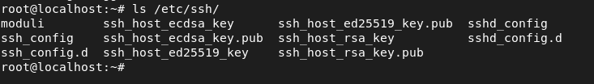
Em seguida, editei o arquivo de configuração para permitir login root e conexões sem senha (apenas para
ambiente de desenvolvimento local):
nano /etc/ssh/sshd_config
# Descomentar as linhas:
# PermitRootLogin prohibit-password
# PermitEmptyPasswords yes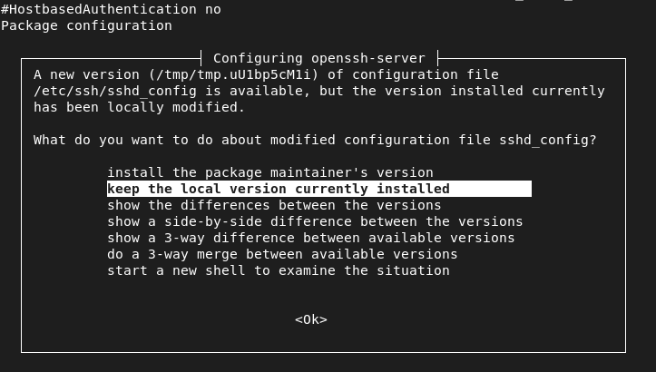
sshd_configApós salvar, reiniciei a VM para aplicar as configurações.
Troubleshooting - Problema de MTU
No dia seguinte, ao tentar conectar novamente, me deparei com um erro de MTU na rede da VM. A causa foi que
a rede virtual interna do libvirt não havia sido iniciada. Para corrigir e evitar que eu esquecesse novamente
de iniciá-la:
# Iniciar a rede na sessão atual
sudo virsh net-start default
# Configurar para iniciar automaticamente
sudo virsh net-autostart default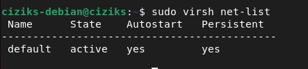
default ativa após net-autostartTestando a Conexão (scp)
Com a rede ativa, capturei o IP da VM e testei a transferência de arquivos via scp:
# Na VM: criar arquivo de teste
nano hello.txt # >> "Hello World"
# Ctrl+] para desanexar do console
# No host: copiar o arquivo da VM
scp root@ip-da-vm>/home/lk_dev/hello.txt /tmp/bar
cat /tmp/bar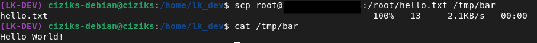
scp funcionando - conteúdo do arquivo recebido no host5) Verificando Módulos do Kernel
Para este passo, é necessário estar conectado à VM - seja via console direto
(sudo virsh start --console arm64) ou via SSH (ssh root@<ip-da-vm>).
Com a sessão aberta, listei os módulos carregados e os salvei em um arquivo para referência no próximo tutorial:
lsmod > vm_mod_list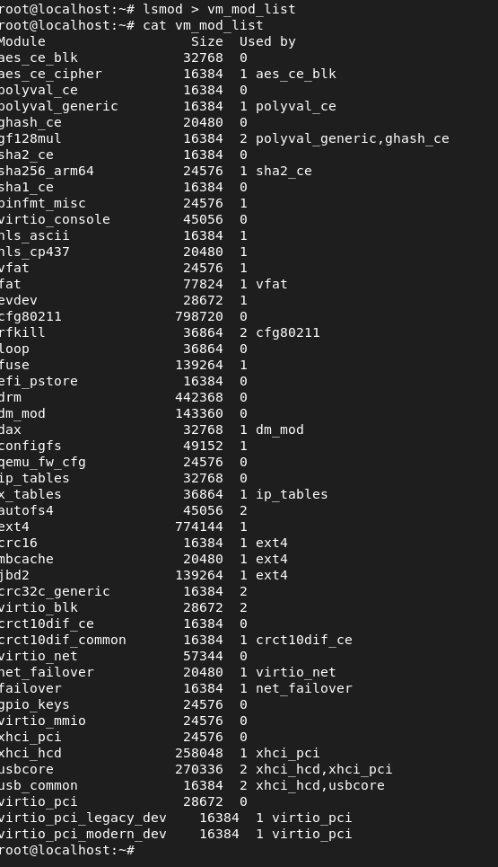
6) Compartilhamento de Arquivos Host ↔ VM
Configuração do Diretório Compartilhado
No host, criei o diretório que será compartilhado com a VM:
cd /home/lk_dev/
mkdir shared_arm64Em seguida, editei a definição da VM para adicionar o <filesystem> compartilhado (utilizando
nano):
sudo virsh edit arm64Foram necessárias duas alterações no XML da VM. Primeiro, dentro de <devices>:
<filesystem type='mount' accessmode='passthrough'>
<driver type='virtiofs' />
<source dir='/home/lk_dev/shared_arm64'/>
<target dir='mount_tag'/>
</filesystem>
E também dentro de <domain>, o bloco <memoryBacking>, necessário
para o virtiofs funcionar corretamente, pois ele requer memória compartilhada entre host e VM:
<memoryBacking>
<source type='memfd'/>
<access mode='shared'/>
</memoryBacking>Troubleshooting - virtiofsd não encontrado
Ao tentar iniciar a VM com a nova configuração, recebi um erro:
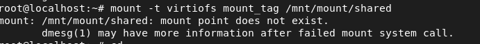
A causa era que o virtiofsd não estava instalado no host:
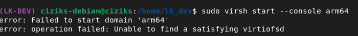
virtiofsd ausente no hostA solução foi simples:
sudo apt install virtiofsdMontando o Diretório na VM
Com a VM rodando novamente, montei o diretório compartilhado de dentro da VM:
mount -t virtiofs mount_tag /mnt/mount/sharedPara validar, criei um arquivo de teste no host:
# No host
nano test.txt # "Hello World! Shared directory is working!"E confirmei que ele aparecia corretamente dentro da VM:
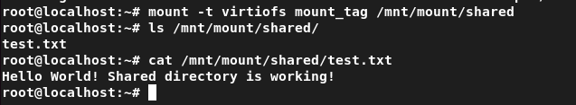
test.txt criado no host visível dentro da VM - compartilhamento funcionando!
Pronto! Agora, o ambiente de Teste para o desenvolvimento do Kernel Linux está completo! :)